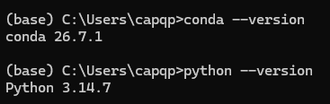
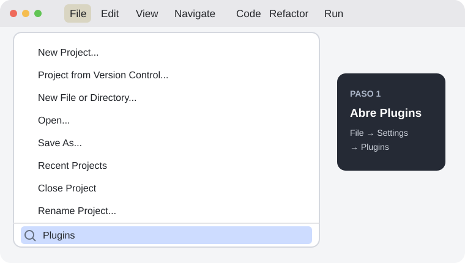
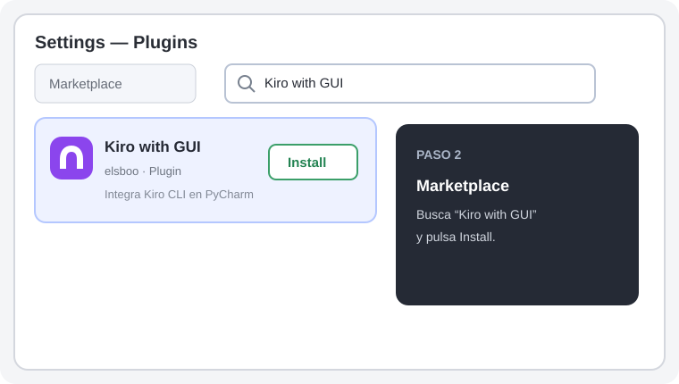
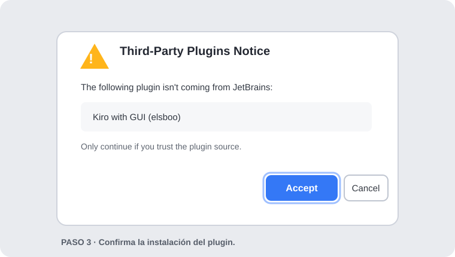
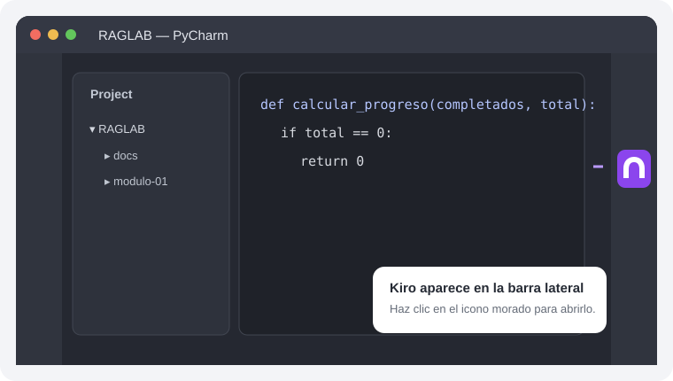

Duración
2 sesiones
Una ruta práctica paso a paso

Diseño de agentes de I.A. RAG-LAB
Primero pondrás a punto tu entorno y aprenderás lo esencial de Python. Luego usarás un agente para convertir una necesidad en un cambio de código. Revisarás lo que proponga, ejecutarás el programa y comprobarás que el resultado sea el esperado antes de guardar los cambios con Git.
Una ruta práctica paso a paso
Entender, editar y ejecutar código
Pedir, revisar y probar cada cambio
Resultados del módulo
Prepara tu espacio de trabajo, entiende el código que ejecutas y usa un agente para avanzar con confianza.
Herramientas base
Cada una cumple una parte del trabajo: escribir código, organizar el proyecto y convertir ideas en cambios que puedas probar.
Aprende y ejecuta
Python es el lenguaje de los ejercicios. Miniconda prepara el entorno `RAGLAB` y organiza sus paquetes.
Organiza tu proyecto
Git registra los cambios; GitHub guarda tu fork; PyCharm te permite abrir, modificar y ejecutar el proyecto.
Avanza con un agente
Kiro te ayuda a convertir un requerimiento en código dentro de PyCharm. Tú revisas el plan y el diff, ejecutas el programa y validas el resultado.
Plan sugerido
En la primera sesión preparas tus herramientas, configuras el proyecto y ejecutas tus primeros ejercicios de Python. En la segunda aplicas lo aprendido con apoyo de un agente y guardas un cambio revisado en GitHub.
Presentación del curso y del flujo de trabajo.
Crea tu cuenta y prepara el repositorio personal.
Configura tu identidad y verifica que funcione.
Haz tu copia del repositorio del curso.
Deja listo el gestor del entorno de Python.
Conecta PyCharm con GitHub y descarga tu fork.
Prepara RAGLAB con Conda y selecciónalo como intérprete.
Practica variables, condiciones, ciclos y funciones; corre los archivos desde PyCharm o la terminal.
Describe una necesidad concreta del proyecto y pide un cambio acotado.
Comprueba qué archivos cambiaron y deja solo lo que quieras guardar.
Corre el programa desde PyCharm o la terminal y verifica el resultado.
Guarda una versión del cambio desde el panel Commit o con Git.
Envía el commit de la rama DEV con Push.
Paso 1 · prepara tu espacio de trabajo
En este curso usaremos Git para guardar el historial de cambios del proyecto en el computador y GitHub para almacenar una copia en línea del repositorio. Esto permite que cada estudiante tenga respaldo, control de versiones y un espacio claro donde entregar sus avances.
Guarda el repositorio en línea, aloja el fork personal y permite sincronizar los cambios del estudiante.
¿Dónde ocurre cada parte? Crea la cuenta en el navegador y ejecuta los comandos en una terminal de tu computador: PowerShell o Git Bash en Windows, o Terminal en macOS y Linux.
Ejecuta cada comando por separado. Antes de guardar nombre y correo, reemplaza los ejemplos por tus datos reales.
Si aparece un número de versión, la instalación terminó correctamente.
git --versionReemplaza Tu Nombre antes de ejecutar.
git config --global user.name "Tu Nombre"Usa el correo asociado a tu cuenta de GitHub.
git config --global user.email "tu-correo@ejemplo.com"Este ajuste solo aplica a repositorios que crees desde cero. En el proyecto del curso trabajarás en la rama DEV.
git config --global init.defaultBranch mainEjecuta estas dos consultas y confirma que aparezcan tu nombre y correo correctos.
git config --global --get user.namegit config --global --get user.emailPaso 2 · crea tu copia personal
Un fork es una copia del repositorio original dentro de la cuenta de GitHub del estudiante. Sirve para que cada persona trabaje sobre su propia versión del proyecto sin afectar directamente el repositorio del curso.
RAGLABUn fork es una copia del repositorio que queda en tu cuenta de GitHub. Puedes trabajar y probar cambios ahí sin modificar el original del curso.
Este paso se hace en el navegador. La copia del proyecto a tu computador se hará después, desde PyCharm.
Paso 3 · prepara Python y sus dependencias
Python es el lenguaje de programación base del curso. Miniconda nos ayuda a gestionar la instalación de Python y las dependencias del proyecto de una forma más ordenada y estable.
Para este curso tiene sentido usar Miniconda porque facilita la configuración del grupo, reduce problemas de dependencias y hace más estable el trabajo con librerías pesadas.
Cada estudiante debe descargar la versión de su sistema operativo e instalarla.
Dejar Miniconda instalado y funcionando para gestionar Python y preparar el entorno del proyecto más adelante.
Selecciona tu sistema operativo
conda ya esté disponible.conda --versionpython --version
conda --versionpython --versionAntes de crear el entorno RAGLAB, revisa los términos de los canales de Anaconda. Este comando registra tu aceptación para los canales que la requieran; ejecútalo solo si estás de acuerdo.
conda tos accept
Paso 4 · conecta tu entorno de trabajo
Conecta tu cuenta de GitHub, descarga tu fork y configura el entorno RAGLAB para trabajar desde PyCharm.
Tu fork estará en el computador y PyCharm usará el entorno RAGLAB del proyecto.
1 File → 2 Settings → 3 Version Control → 4 GitHub.5 + → 6 Log In via GitHub. Después, inicia sesión en el navegador y autoriza a JetBrains.Clone Repository y elige 2. GitHub. Luego selecciona tu fork y clónalo.origin/DEV y elige Checkout para cambiar a la rama DEV.RAGLAB.yml.
Si conda no se reconoce, abre Anaconda Prompt y ubícate en esa misma carpeta.
conda env create -f RAGLAB.yml
conda activate RAGLAB
python --version
pip listRAGLAB · 2. Open In · 3. Explorer.Open in Terminal.Agrega el entorno Conda existente RAGLAB como intérprete del proyecto. Al terminar, comprueba que PyCharm lo muestre como intérprete activo.
<No interpreter> · 2. Add New Interpreter · 3. Add Local Interpreter.Select existing, Conda y RAGLAB · 5. Pulsa OK.Paso 5
Haz clic derecho dentro del archivo abierto y selecciona Run '01_hola_python'.
Run '01_hola_python'.Abre la terminal en la carpeta del proyecto y asegúrate de tener activo el entorno RAGLAB.
python modulo-01/ejercicios/01_hola_python.pypython modulo-01/ejercicios/02_variables_y_tipos.pypython modulo-01/ejercicios/03_condicionales_y_bucles.pypython modulo-01/ejercicios/04_funciones.pyPaso 6 · Guarda y comparte tus cambios
Haz un cambio pequeño, revisa lo que Git detecta, crea un commit y sube tu trabajo desde la rama DEV.
.gitignore excluye archivos localesEvita que configuraciones personales y archivos generados se mezclen con el código del curso.
RAGLAB.ymlmodulo-01/ejercicios/*.pydocs/.idea/.venv/__pycache__/.envEn este proyecto, .idea/ ya está en .gitignore: los ajustes locales de PyCharm no aparecerán entre los archivos para confirmar.
Un commit guarda una instantánea de los archivos seleccionados y un mensaje que explica el cambio. Se queda en tu computador hasta que hagas Push.
Commit. Commit and Push también los envía a GitHub.Abre la terminal en la carpeta del proyecto y comprueba que estás en la rama DEV.
git statusgit add .git commit -m "Actualiza ejercicio de Python"git push origin DEVPaso 7 · Programación asistida por agentes
Kiro es un agente de programación con inteligencia artificial. Puede leer el contexto del proyecto, explicar código, proponer y editar archivos, y ejecutar comandos. Usaremos Kiro CLI junto con el plugin Kiro with GUI para trabajar desde un panel dentro de PyCharm.
En este ejercicio te ayudará a convertir una necesidad en un cambio pequeño y comprobable. Tú decides qué pedir, revisas el plan y el diff, y ejecutas el programa para validar el resultado.
Usa PyCharm 2025.1 o posterior. La interfaz de Kiro se instala como un plugin desde el Marketplace de JetBrains.
Instala Kiro CLI, no Kiro IDE. En Windows necesitas Windows 11 y PowerShell; al terminar, inicia sesión con tu cuenta de Kiro.
Ten a mano la cuenta con la que vas a autenticar el CLI. Los modelos y límites disponibles dependen del plan.
Modelo recomendado: empieza con la opción Auto de Kiro. Los modelos disponibles y el consumo dependen del plan y pueden cambiar.
Sigue este orden: instala y autentica Kiro CLI, instala el plugin y comprueba que el panel de Kiro aparezca en el IDE.
kiro-cli --version.kiro-cli login y completa la autenticación en el navegador.kiro-cli doctor.En PyCharm, abre File → Settings → Plugins → Marketplace, busca Kiro with GUI e instala el plugin. Si aparece el aviso de plugins de terceros, selecciona Accept. Reinicia PyCharm si lo solicita.




kiro-cli no se detecta, reemplázalo por la ruta completa. En Windows puedes encontrarla en PowerShell con Get-Command kiro-cli | Select-Object -ExpandProperty Source.kiro-cli login en PowerShell y vuelve al panel.Abre modulo-01/ejercicios/04_funciones.py y envía este requerimiento a Kiro:
En modulo-01/ejercicios/04_funciones.py, agrega una función llamada calcular_progreso(completados, total) que retorne el porcentaje completado como un número entre 0 y 100. Si total es 0, debe retornar 0. Agrega ejemplos de uso al final del archivo. No edites otros archivos. Antes de cambiar el código, explícame el plan y espera mi aprobación. Después de implementar, dime cómo comprobar los resultados.Verifica que Kiro entendió el archivo, la fórmula y el caso total = 0.
Ubica la función, sus argumentos, el valor que retorna y el caso especial.
Verifica que 2 de 4 produzca 50 y que el caso con total 0 produzca 0.
Si algo falla, comparte el error con Kiro. Cuando la mejora funcione, revisa git diff, crea un commit y súbelo a GitHub desde la rama DEV.
El agente propone; tú decides. Antes de guardar el cambio, asegúrate de poder explicar qué se modificó y cómo comprobaste que funciona.
Documentación: instalar Kiro CLI, plugin Kiro with GUI, modelos disponibles y planes y créditos.
Soporte
Busca el síntoma y vuelve a la sección indicada. Así podrás resolverlo sin repetir toda la configuración.
conda no se reconoceEn Windows, abre Anaconda Prompt desde Inicio; el instalador recomienda dejar desmarcada la opción para agregar Conda al PATH. En macOS o Linux, abre una terminal nueva después de instalar.
En Settings → Version Control → GitHub, confirma que PyCharm inició sesión con la cuenta que contiene tu fork de RAGLAB. Luego vuelve a Clone Repository y selecciona ese repositorio.
En la configuración del intérprete, agrega un intérprete Conda existente y selecciona el entorno RAGLAB. Si aún no existe, créalo desde la carpeta raíz con conda env create -f RAGLAB.yml y luego actívalo con conda activate RAGLAB.
Confirma que Kiro with GUI figure como instalado en Settings → Plugins → Installed. Reinicia PyCharm y comprueba que el comando del CLI esté configurado en Manage → Settings.
Revisa git status y confirma que estás en la rama DEV. Si Git solicita identidad, configura el nombre y el correo asociados a tu cuenta de GitHub; después vuelve a intentar el commit y git push origin DEV.
La primera instalación descarga dependencias como torch y transformers. Mantén abierta la terminal y espera a que termine; si aparece un error, comparte el primer mensaje de fallo antes de volver a ejecutar el comando.
Indica el paso que seguías, qué esperabas que ocurriera y qué ocurrió. Copia el mensaje completo de la terminal o adjunta una captura donde se vea la ventana relevante.
Cierre
El módulo queda completo cuando puedes recorrer y explicar este flujo:
Git configurado; fork de RAGLAB creado en tu cuenta y abierto en PyCharm desde la rama DEV.
Miniconda instalado, entorno RAGLAB creado desde RAGLAB.yml y seleccionado como intérprete de PyCharm.
Ejecutaste los cuatro ejercicios: hola Python, variables y tipos, condicionales y bucles, y funciones.
Con Kiro, planteaste una mejora concreta, revisaste el plan y el diff, ejecutaste el script y comprobaste los resultados esperados.
Creaste un commit que puedes explicar y lo subiste a tu fork en GitHub con Push desde DEV.